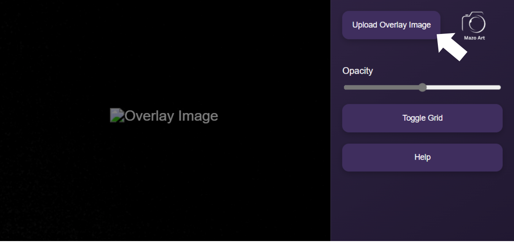
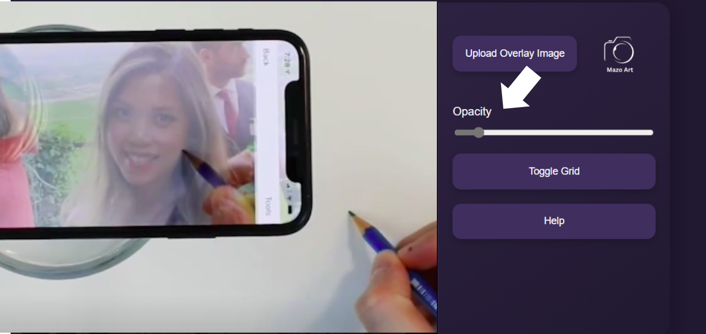

Click the 'Upload Overlay Image' button 📸 to select
an image from your gallery. Choose the picture you want to sketch ✏️

Set the opacity to 14% for a better effect. If the opacity is low, the picture will appear faintly on the screen.
You can place your phone over the sketchbook and trace the image 📱✏️

Use the 'Toggle Grid' button 🟩
to add a grid to the picture. This will help you draw more easily ✏️